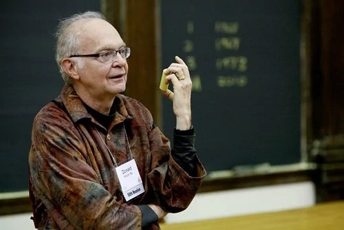

Alan Turing

Alan Turing foi um matemático, lógico e cientista da computação britânico, amplamente
reconhecido como um dos pioneiros da computação moderna. Durante a Segunda Guerra Mundial,
destacou-se ao desenvolver técnicas de criptoanálise que permitiram decifrar códigos da
máquina Enigma, utilizados pela Alemanha nazista. Turing também idealizou o conceito de uma
máquina universal — hoje conhecida como "máquina de Turing" — que fundamenta os princípios
teóricos da computação. Seu trabalho teve papel central no desenvolvimento dos primeiros
computadores e influenciou profundamente as áreas de inteligência artificial e ciência da
computação.
John von Neumann

John von Neumann foi um matemático, físico e cientista da computação húngaro-americano,
reconhecido por suas contribuições fundamentais em diversas áreas do conhecimento, incluindo
matemática pura, física teórica, economia e ciência da computação. É amplamente conhecido
por ter idealizado a arquitetura de von Neumann, modelo de organização de computadores
baseado no armazenamento de dados e instruções em uma mesma memória — conceito que permanece
como base dos sistemas computacionais modernos. Durante a Segunda Guerra Mundial, participou
do Projeto Manhattan e colaborou intensamente no desenvolvimento de computadores eletrônicos
de uso geral. Sua abordagem pragmática e interdisciplinar consolidou a computação como uma
ciência aplicada, conectando teoria e engenharia de forma inovadora e duradoura.
Donald E. Knuth

Donald E. Knuth é um cientista da computação e matemático norte-americano, amplamente
reconhecido por suas contribuições fundamentais à análise de algoritmos e à sistematização
da programação como disciplina rigorosa. É autor da série The Art of Computer Programming,
obra de referência que consolidou os fundamentos teóricos e práticos da ciência da
computação. Knuth também desenvolveu o sistema de tipografia digital TeX, ainda hoje
amplamente utilizado na produção de textos técnicos e acadêmicos, especialmente nas áreas de
exatas. Seu trabalho foi crucial para estabelecer padrões de precisão, clareza e elegância
na programação, elevando-a ao status de arte e ciência.